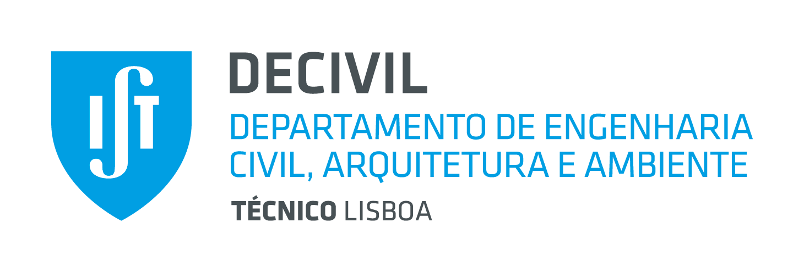

Resposta do material

Resistência dos Materiais 2025/2026
Ensaio de Tração Uniaxial
Simulador interativo para apoio às aulas
Comparação da geometria
Ao alterar o diâmetro
Mantém se a extensão atual. A tensão do material permanece igual e a força varia com a área da secção.
Resposta do provete
Curva força alongamento
Provete virtual
Extensão
Estado atual
Grandezas medidas
Tensão0 MPa
Extensão0
Força0 kN
Alongamento0 mm
Diâmetro0 mm
FaseElástico
Modo de previsão
Propriedade do material ou do provete?
Escolha um desafio, formule uma previsão e revele depois o resultado.
Relações fundamentais
Tensão nominalσ = F / A₀
Extensão nominalε = ΔL / L₀
Relação elásticaσ = E ε
Força axialF = σ A₀